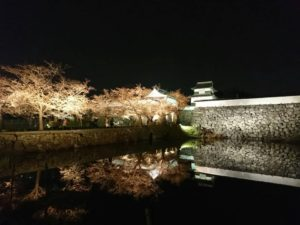
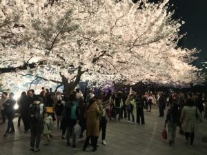

福岡城さくらまつりは、上之橋か下之橋どちらかの橋を渡って福岡城跡に入り、敷地内を一周してもう片方の橋から出るのがおすすめ。どちらの橋も無料ながら見ごたえある桜のライトアップを楽しめます。

公園内の桜も満開を迎えました！ 春の暖かな日差しの中の桜も、ライトアップされた夜桜も、 どちらも是非お楽しみ下さい！
【3/31開花情報:満開】 場所によっては満開の木々もありますが、園内全体では七分?八分咲きといった感じでしょうか。
今日の夜桜も楽しみです。皆様のお越しを
今日も天気がよく、皆さん公園内を散策しお待ちしております。
福岡城さくらまつりは、上之橋か下之橋どちらかの橋を渡って福岡城跡に入り、敷地内を一周してもう片方の橋から出るのがおすすめ。どちらの橋も無料ながら見ごたえある桜のライトアップを楽しめます。
昨年好評だった大道芸パフォーマンスが今年も登場。鴻臚館広場、上之橋の他、新たに西広場もパフォーマンススポットに加わりました。
